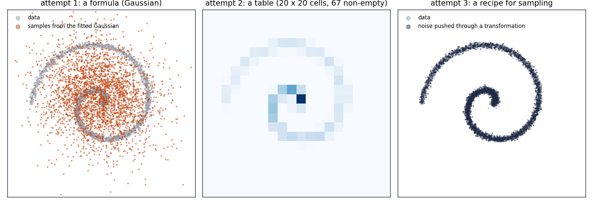

From Jensen's inequality to the ELBO¶
Sessions. A note takes one topic at a time. A session page follows one line of argument across several topics, in the order that worked best when friends and I went through the material together. This one runs through convexity, Jensen's inequality, KL divergence, maximum likelihood, latent variables and the ELBO.
Prerequisites: notes 1, 2 and 3.
Where this page is going¶
The goal is to make a model distribution \(p_\theta\) close to the distribution of the data. To say what "close" means we need a way to measure how far apart two distributions are. That is the KL divergence. The one fact about the KL that everything rests on, that it is never negative, is proved with a single inequality, Jensen's. So the page builds those two tools first (sections 1 and 2), and then follows the argument:
- Learning the data distribution means maximum likelihood (section 3).
- A network cannot output a density directly (section 4).
- A hidden variable gets around that, but its likelihood is an integral we cannot compute (section 5).
- The ELBO is a lower bound on that likelihood which we can compute (sections 6 and 7), and it becomes the training loss (section 8).
The same bound, applied to a chain of hidden variables, is how DDPM is trained. That comes on a later page.
1. Jensen's inequality¶
Jensen's inequality compares two orders of doing things: average first and then apply a curved function, or apply the function first and then average.
1.1 Curved functions, and the form that defines them¶
Draw the graph of \(\log u\) for \(u > 0\). It rises, but more and more slowly: it bends downward. Pick any two points on the graph and join them with a straight segment, a chord. The chord always lies below the graph. A function with this property is called concave. The function \(e^u\) bends the other way: every chord lies above its graph. Such a function is called convex.
To turn the picture into a formula we need to name a point between two numbers \(a\) and \(b\). Take a weight \(\lambda\) between \(0\) and \(1\) and form
This is a weighted average of \(a\) and \(b\). Its two coefficients, \(\lambda\) and \(1 - \lambda\), are not negative and add up to one. That is what keeps the result between \(a\) and \(b\): it equals \(a\) when \(\lambda = 1\), \(b\) when \(\lambda = 0\), and the midpoint when \(\lambda = \tfrac12\).
Definition (concave and convex)
\(f\) is concave if for any two points \(a, b\) and any weight \(\lambda\) between \(0\) and \(1\),
\(f\) is convex if the inequality goes the other way, \(\le\).
The left side is the height of the graph above the point \(\lambda a + (1 - \lambda) b\). The right side is the height of the chord above the same point. So the definition says "graph above chord". The same weights appear on both sides, once inside \(f\) and once outside: for a concave function, the function of the average is at least the average of the function.
The same holds for any number of points \(a_1, \ldots, a_n\), as long as the weights \(\lambda_1, \ldots, \lambda_n\) are not negative and add up to one:
A combination \(c_1 a_1 + \cdots + c_n a_n\) with any coefficients is a linear combination. A weighted average is the special case with coefficients that are not negative and sum to one, and its formal name is a convex combination.
1.2 Log is concave, exp is convex¶
A function whose second derivative is never positive is concave; never negative, convex. The second derivative measures bending: negative means the slope is decreasing, so the graph bends down.
| function | second derivative | so it is |
|---|---|---|
| \(\log u\), for \(u > 0\) | \(-1/u^2 < 0\) | concave |
| \(e^u\) | \(e^u > 0\) | convex |
| \(u^2\) | \(2 > 0\) | convex |
| \(a u + b\) | \(0\) | both: a straight line is its own chord |
With numbers. For \(\log\), take \(a = 1\), \(b = 4\) and equal weights. The function of the average is \(\log 2.5 = 0.916\). The average of the function is \(\tfrac12(\log 1 + \log 4) = 0.693\). The first is larger, as concavity says.
For \(e^u\), take \(a = 0\), \(b = 2\). The function of the average is \(e^1 = 2.72\). The average of the function is \(\tfrac12(e^0 + e^2) = 4.19\). Now the first is smaller, as convexity says.
1.3 An expectation is a weighted average: Jensen's inequality¶
An expectation is a weighted average
The probabilities are not negative and add up to one. So an expectation is a weighted average of the values of \(U\), with the probabilities as the weights.
Example. The number of heads in two tosses: \(\tfrac14 \cdot 0 + \tfrac12 \cdot 1 + \tfrac14 \cdot 2 = 1\), with weights \(\tfrac14, \tfrac12, \tfrac14\).
Put the values \(u_i\) in the place of the points \(a_i\) and the probabilities in the place of the weights. The left side of the many-point form becomes \(f(\E[U])\) and the right side becomes \(\E[f(U)]\):
Jensen's inequality
For any random variable \(U\):
If \(f\) is strictly curved, equality holds only when \(U\) is constant.
For a straight line the two sides are equal: that is the rule \(\E[aU + b] = a\E[U] + b\) of note 3. The numbers of section 1.2 were two cases of Jensen, with \(U\) equal to \(1\) or \(4\), and to \(0\) or \(2\), with probability \(\tfrac12\) each.
See it. Each ▲ handle under the plot is one equally likely value of \(U\). The navy dots are the values \(f(u_i)\). Their average, the orange diamond, sits at horizontal position \(\E[U]\) and height \(\E[f(U)]\). The ring on the graph directly above it is at height \(f(\E[U])\). The teal segment between them is the Jensen gap.
Proof: the tangent line
Write \(\mu\) for the number \(\E[U]\). This is just a name, which keeps the random \(U\) apart from the one fixed point \(\mu\) where we draw a tangent. For a concave \(f\) the tangent line at \(\mu\) lies above the graph everywhere:
This holds for every value \(U\) can take, so it holds on average. The right side is a straight line in \(u\), so its expectation is easy:
The tangent lies above a concave graph by Taylor's theorem: \(f(u) = f(\mu) + f'(\mu)(u - \mu) + \tfrac12 f''(\xi)(u - \mu)^2\) for some \(\xi\) between \(\mu\) and \(u\), and the last term is \(\le 0\) when \(f'' \le 0\).
Two quick uses.
- Variance is never negative. For the convex \(u^2\), Jensen gives \(\E[U^2] \ge (\E[U])^2\). The difference of the two sides is exactly \(\mathrm{Var}(U)\) (note 3). So the Jensen gap for \(u^2\) is the variance.
- The arithmetic mean is never below the geometric mean. For positive \(a\) and \(b\) with probability \(\tfrac12\) each, Jensen for \(\log\) gives \(\log \tfrac{a + b}{2} \ge \tfrac12(\log a + \log b) = \log \sqrt{ab}\), so \(\tfrac{a + b}{2} \ge \sqrt{ab}\). For \(1\) and \(4\): \(2.5 \ge 2\).
Which way does the inequality go? I always forget.
Picture it rather than memorise it. Draw the concave \(\log\) curve, put two dots on it, and mark the midpoint of the chord between them. The chord lies under the curve, so the average of the \(f\)'s is below \(f\) of the average. If that fails, use the numbers: \(\log 2.5 = 0.92\) beats \(\tfrac12(\log 1 + \log 4) = 0.69\).
1.4 Where a log meets an expectation¶
Machine learning has two habits. It takes logarithms, because the probability of many independent data points is a product of small numbers and the log turns it into a sum. And it takes expectations over whatever it does not know: the data point, the hidden variable, the noise. So expressions with both a \(\log\) and an \(\E\) are everywhere, and the two do not commute. Since \(\log\) is concave, Jensen says which is bigger:
This line is used twice on this page: to prove that the KL divergence is never negative (section 2), and to bound a log-likelihood we cannot compute (section 6).
2. KL divergence¶
We need a single number that says how far apart two distributions \(q\) and \(p\) are. For now they are just two distributions.
The idea. At any point \(z\), compare how probable the two distributions think it is. The log of the ratio \(q(z)/p(z)\) is positive where \(q\) thinks \(z\) more likely than \(p\) does, negative where less, zero where they agree. Average that log-ratio, drawing \(z\) from \(q\).
Definition (Kullback–Leibler divergence)
The distribution in the first slot is the one we average over.
Example. Let \(p\) be a fair coin and \(q\) a coin that shows heads with probability \(0.9\):
The tails term is negative. Individual terms can be negative; the total cannot. Swapping the roles gives \(\KL(p \,\|\, q) = 0.5 \log \tfrac{0.5}{0.9} + 0.5 \log \tfrac{0.5}{0.1} = 0.511\), a different number. The KL is not symmetric.
KL is never negative
Proof, with Jensen. Minus the KL flips the ratio inside the log. Then apply Jensen to the concave \(\log\):
Equality in Jensen needs \(p(z)/q(z)\) to be the same constant \(c\) wherever \(q\) has mass; both add up to one, so \(c = 1\) and \(p = q\).
Since the KL is not symmetric, it is not a distance in the geometric sense. A good reading is: how badly does \(p\) explain samples that actually come from \(q\)?
Between two Gaussians the KL has a closed form:
When the two variances are equal, the log term vanishes and what is left is a squared distance between the means:
This second formula is the step that will turn the DDPM objective into the mean-squared-error loss everyone trains with.
Which side do we adjust?¶
The definition fixes two roles and nothing else. The samples come from the first slot. The second slot is scored on how well it explains them. Which of the two is ours depends on the situation, and this page has both.
| first slot: where the samples come from | second slot: scored on explaining them | what we adjust | |
|---|---|---|---|
| fitting a model to data (section 3) | the data | the model \(p_\theta\) | the second slot |
| a proxy for a posterior (section 6) | the proxy \(q\) | the true posterior | the first slot |
The first row is the common and intuitive one: the samples are given, and the model moves until it explains them. In the second row the thing we adjust sits in the first slot, for a practical reason: we can only average over a distribution we can draw samples from. One rule covers both: the first slot holds the distribution we can draw samples from, and we adjust whichever one is ours to adjust.
Seeing the KL¶
The illustration shows the second row: the navy curve is a target \(p\), the orange curve is a Gaussian \(q\) that we adjust. The lower panel plots \(q(z) \log \tfrac{q(z)}{p(z)}\); its total area is \(\KL(q \,\|\, p)\).
With a two-bump target no single Gaussian fits, and the two directions disagree about which comes closest. Minimising \(\KL(q \,\|\, p)\) puts \(q\) on one bump: averaging over draws from \(q\), any mass \(q\) puts in the empty valley is punished heavily, so it settles for one bump (mode-seeking). Minimising \(\KL(p \,\|\, q)\) gives a wide Gaussian covering both bumps (mass-covering). The ELBO of section 6 uses the first, mode-seeking direction.
Why the logarithm? Why not compare q(z) and p(z) directly?
The log turns ratios into differences, and "how many times more likely" is the natural comparison for probabilities: being wrong by a factor of 2 should count the same at \(10^{-1}\) as at \(10^{-6}\). Logs also make independent pieces add up: for independent coordinates, the KL of the joint is the sum of the KLs. And \(-\log p(z)\) is the "surprise" of seeing \(z\) when you expect \(p\), so the KL is the extra surprise you suffer, on average, by believing \(p\) when the samples come from \(q\).
3. The goal: what it means to learn the data distribution¶
We have samples from an unknown distribution \(p_{\text{data}}(x)\). We want a distribution \(p_\theta(x)\) with adjustable parameters \(\theta\) that we can bring close to \(p_{\text{data}}\), and a way to draw new samples from it.
"Close" now has a meaning: make \(\KL(p_{\text{data}} \,\|\, p_\theta)\) small. The data sits in the first slot because the data is what we can draw samples from. The formula contains \(p_{\text{data}}\), which we do not know. Write it out and see how much of it we need:
The first term does not change whatever we do to the model. The second is an average over data, and data is what we have. So raising the second term lowers the KL, and we never need \(p_{\text{data}}\).
Result (maximum likelihood)
Making \(\KL(p_{\text{data}} \,\|\, p_\theta)\) small is the same as making
large, where \(x_1, \ldots, x_N\) are the training examples.
The log of the probability came out of the KL; nobody chose it. The price is that the first term stays unknown, so we can tell which of two models is closer to the data but not how far the best one still is. And the goal now rests on one ability: computing \(\log p_\theta(x)\) for a data point.
4. Can a network output the density directly?¶
Flexible functions are what neural networks are for, so the direct idea is to let a network \(f_\theta\) take \(x\) and return a density. A density must be non-negative, which \(e^{f_\theta(x)}\) arranges, and it must integrate to one, which needs a division:
\(Z_\theta\) is an integral over all of data space, a million dimensions for a small image, of a function defined by a network. It has no formula, cannot be computed on a grid, and changes every time \(\theta\) changes. Without it we cannot evaluate \(p_\theta(x)\), which is exactly the ability section 3 asked for.
Two ways around \(Z_\theta\) come back later in the series. Differentiate: \(\nabla_x \log p_\theta(x) = \nabla_x f_\theta(x)\) does not contain \(Z_\theta\), and that gradient is the score of Part V. Or split \(x\) into coordinates and model one at a time, each a one-dimensional distribution that is easy to normalise, which is how language models work. This page takes a third way: do not write \(p_\theta(x)\) down at all.
Two simpler attempts: a formula, and a table

A formula, such as a Gaussian with fitted mean and covariance, is easy to fit and to sample, but it is one bump, and no choice of parameters bends a bump into a spiral (left panel).
A table: cut the plane into cells and count. It takes any shape (middle panel), but with \(10\) cells per coordinate a tiny \(28 \times 28\) image needs \(10^{784}\) cells, and the table gives probability zero to everything not in the training set. To learn from finite data, what we learn about one \(x\) must tell us something about nearby \(x\): a function with shared parameters, a network.
The right panel belongs to section 5: noise pushed through a transformation.
5. A way around: a hidden variable¶
5.1 Describe how a sample is made¶
Instead of writing the distribution down, describe how a sample is produced.
The smallest example. A friend has two coins in a pocket, one fair and one that shows heads \(90\%\) of the time. Each round the friend picks one without showing you, flips it, and tells you only the result. Which coin was used is a hidden variable: it shaped the result, and it is never in the data.
A latent-variable model is the same idea with a continuous hidden variable and a network:
- a prior \(p(z)\) over the latent \(z\), almost always \(\N(0, I)\);
- a decoder \(p_\theta(x \mid z)\), a distribution over data given a latent, with a network inside.
To generate, draw \(z\) from the prior and then \(x\) from the decoder. The joint is \(p_\theta(x, z) = p(z)\, p_\theta(x \mid z)\), and we only ever observe \(x\). The model is flexible and easy to sample from. But it never wrote \(p_\theta(x)\) down.
The example for this page. One latent number and one data number:
Draw \(z\), multiply by \(w\), add Gaussian noise. Here every quantity has an exact formula, so each claim can be checked against the truth. A real VAE replaces \(wz\) by a network, and then nothing has a formula.
Is the hidden variable something real, like the coin in the pocket?
In the coin story it is a real cause. In a VAE or in DDPM it is a modelling device: "hidden" only means it has no observed values in the data. Nothing guarantees that a learned \(z\) means "slant" or "thickness"; whatever meaning it has comes out of training. In DDPM the hidden variables will be noisy versions of the image, which are not in the dataset because we invent them.
5.2 The likelihood is an integral¶
The probability the model gives to \(x\) is the marginal, with the latent summed out (note 2):
Go through every latent, ask how likely it is and how likely it is to produce this \(x\), and add up. In the example, \(x = wz + s\varepsilon\) is a sum of independent Gaussians with variance \(w^2 + s^2 = 1.64\), so for \(x = 1.5\)
Keep that number; it is the truth everything below is compared with. For a network decoder with a latent of many dimensions, the integral has no closed form and cannot be done on a grid.
Why not estimate the integral by sampling z from the prior?
In one dimension it works: averaging \(p(x \mid z)\) over 20 000 prior samples gives \(\log p(x)\) between \(-1.84\) and \(-1.87\). But in many dimensions only a tiny region of latent space produces anything like a given \(x\), and a latent drawn from the prior almost never lands there. The fix is to sample \(z\) from a distribution that knows about \(x\), which is the posterior of the next section.
5.3 The posterior, and a proxy for it¶
Given \(x\), which latents could have produced it? That is the posterior (note 2):
The denominator is the integral we cannot compute. But the numerator can be computed for any \(z\), and the denominator does not depend on \(z\). So we know the posterior's shape; only its scale is missing. In the example it is \(\N(0.915,\ 0.390)\) for \(x = 1.5\).
Since the true posterior is out of reach in general, we bring in a proxy: a distribution \(q(z)\) of our own, simple enough to sample from and evaluate, usually a Gaussian with an adjustable mean and variance. In a VAE a second network, the encoder, produces it.
We only want to generate. Why do we need the direction from x to z?
For training. To improve the decoder on a data point \(x\), we need to know which latents should have produced it, so we can push the decoder's output for those latents toward \(x\). In DDPM this direction comes for free: it is the noising process.
6. The ELBO¶
Fix one data point \(x\) and any proxy \(q(z)\). Each line uses one fact:
Result (the ELBO identity)
since the KL is never negative. ELBO stands for evidence lower bound; "evidence" is an old name for \(p(x)\).
- The ELBO is computable. It needs only the joint \(p(z)\, p_\theta(x \mid z)\) and our own \(q\), and it is an expectation under \(q\), so it can be estimated by sampling from \(q\).
- The gap is exactly the KL from \(q\) to the true posterior. If \(q\) is the posterior, the bound is an equality.
- The left side does not depend on \(q\). So raising the ELBO through \(q\) can only shrink the gap.
The two-line derivation, with Jensen
Multiply and divide by \(q\) inside the integral, and use \(\log \E \ge \E \log\) from section 1.4:
Quicker, but it only says the bound holds. The derivation above also says what the gap is.
How do we know the proxy is good?¶
We cannot compare \(q\) with the true posterior directly, because we do not have the true posterior. The identity does it for us. Its left side does not depend on \(q\), so whenever a change to \(q\) raises the ELBO, the KL from \(q\) to the true posterior drops by exactly the same amount. We minimise a distance we cannot compute by maximising a quantity we can.
This is the same move as in section 3. There the unknown was the data distribution, and the KL to it fell as an average over data rose. Here the unknown is the posterior, and the KL to it falls as the ELBO rises. In both cases an unknown constant is left over, so we can rank proxies but not read off how far the best one still is.
Does the gap ever actually close?
Only if the family of \(q\) contains the true posterior. In the example it does, because the true posterior is Gaussian; the explorer below lets you close the gap by hand. For a network decoder the true posterior is generally not Gaussian and a gap remains. In DDPM, the posteriors that matter are exactly Gaussian, which is one reason the method is so clean.
7. Try it¶
The example with \(x = 1.5\). The navy curve is the true posterior; the orange curve is \(q\), starting at the prior.
| proxy \(q\) | reconstruction | \(-\KL(q \| \text{prior})\) | ELBO | gap | ELBO + gap |
|---|---|---|---|---|---|
| the prior, \(\N(0, 1)\) | \(-3.235\) | \(0\) | \(-3.235\) | \(1.383\) | \(-1.852\) |
| \(\N(1.5,\ 0.25)\) | \(-0.891\) | \(-1.443\) | \(-2.334\) | \(0.482\) | \(-1.852\) |
| the true posterior, \(\N(0.915,\ 0.390)\) | \(-1.268\) | \(-0.584\) | \(-1.852\) | \(0\) | \(-1.852\) |
The last column is always \(\log p(x) = -1.852\), as the identity promises.
8. The ELBO as the training loss¶
Now the argument closes. Section 3 asked us to maximise \(\E_{\text{data}}[\log p_\theta(x)]\). Section 6 bounds \(\log p_\theta(x)\) from below for every data point, so it bounds the average too:
The training objective
Maximise the average ELBO over the data, with respect to the model's parameters \(\theta\) and the proxies \(q\) together. In code: minimise \(-\text{ELBO}\).
Substitute \(p_\theta(x, z) = p(z)\, p_\theta(x \mid z)\) and regroup:
Reconstruction is large when the latents proposed by \(q\) decode to something close to \(x\); on its own it would shrink \(q\) to a spike. The penalty is zero when \(q\) is the prior; on its own it would make \(q\) ignore \(x\). In the table, the prior has no penalty but poor reconstruction, the narrow guess reconstructs well but pays a heavy penalty, and the true posterior is the best compromise.
Where squared error comes from. With a Gaussian decoder, \(\log p(x \mid z) = -\frac{(x - wz)^2}{2s^2} + \text{const}\). The reconstruction term is minus a squared error. Maximum likelihood with a Gaussian output is least squares, and nobody had to choose it as a loss.
What happens if we drop the KL term?
Then we have an ordinary autoencoder. Reconstruction becomes excellent, but each data point's latents end up in narrow, scattered spikes. A latent drawn from the prior lands between them, where the decoder was never trained, and decodes to garbage. The KL term keeps the region the encoder uses and the region the prior samples from the same.
Should the two terms be weighted against each other?
In the ELBO both have weight one, and that is what makes the sum a lower bound. In practice a weight \(\beta\) on the KL is common: \(\beta > 1\) holds \(q\) closer to the prior at the cost of reconstruction. That model is the \(\beta\)-VAE. It no longer bounds the likelihood, but it is often useful.
9. Where this goes next¶
Three facts carry forward.
- For any \(q\), \(\log p_\theta(x) = \text{ELBO} + \KL\big(q \,\|\, p_\theta(z \mid x)\big)\).
- The ELBO splits into reconstruction and a KL to the prior; KLs between Gaussians are closed-form, and with equal variances they are squared distances between means.
- A Gaussian sample can be written as mean plus scale times standard noise, \(z = \mu + \sigma \varepsilon\).
Three changes turn this into DDPM:
| VAE | DDPM | |
|---|---|---|
| latents | one, \(z\), usually smaller than \(x\) | \(T\) of them, \(x_1, \ldots, x_T\), each the size of the data |
| proxy \(q\) | a learned network, the encoder | fixed: add a little Gaussian noise at each step |
| decoder | one network, one step | one network applied \(T\) times, each step removing a little noise |
With a fixed proxy there is nothing to learn on that side, and with a chain of latents the single KL becomes a sum of KLs, one per step.
Code¶
The numbers in the table come from this script. It computes the exact log-likelihood and posterior of the example, the ELBO in closed form and by sampling, and checks the identity.
"""Study step 1: a latent-variable model small enough to check the ELBO against the exact answer.
latent z ~ N(0, 1)
decoder x | z ~ N(w z, s^2)
so that x ~ N(0, w^2 + s^2) (the marginal likelihood, exact)
and z | x ~ N(w x / (w^2+s^2), s^2 / (w^2+s^2)) (the true posterior, exact)
For any Gaussian guess q(z) = N(m, v) the ELBO has a closed form, and
log p(x) = ELBO(q) + KL(q || true posterior) holds exactly.
"""
import numpy as np
w, s, x = 1.0, 0.8, 1.5
def log_normal(u, mean, var):
return -0.5 * np.log(2 * np.pi * var) - (u - mean) ** 2 / (2 * var)
def exact():
vx = w * w + s * s
return log_normal(x, 0.0, vx), w * x / vx, s * s / vx # log p(x), posterior mean, posterior variance
def elbo_closed_form(m, v):
reconstruction = -0.5 * np.log(2 * np.pi * s * s) - ((x - w * m) ** 2 + w * w * v) / (2 * s * s) # E_q[log p(x|z)]
kl_to_prior = 0.5 * (v + m * m - 1.0 - np.log(v)) # KL(q || N(0,1))
return reconstruction - kl_to_prior, reconstruction, kl_to_prior
def elbo_monte_carlo(m, v, n=400_000, seed=0):
z = m + np.sqrt(v) * np.random.default_rng(seed).standard_normal(n) # z ~ q
return np.mean(log_normal(z, 0.0, 1.0) + log_normal(x, w * z, s * s) - log_normal(z, m, v)) # E_q[log p(x,z) - log q(z)]
def kl_gauss(m1, v1, m2, v2):
return 0.5 * (np.log(v2 / v1) + (v1 + (m1 - m2) ** 2) / v2 - 1.0)
def prior_sampling_estimate(n, seed):
z = np.random.default_rng(seed).standard_normal(n) # z ~ prior
return np.log(np.mean(np.exp(log_normal(x, w * z, s * s))))
if __name__ == "__main__":
logpx, pm, pv = exact()
print(f"exact: log p(x) = {logpx:.4f} true posterior = N({pm:.4f}, {pv:.4f})")
for name, (m, v) in {"q = prior N(0,1)": (0.0, 1.0), "q = N(1.5, 0.25)": (1.5, 0.25), "q = true posterior": (pm, pv)}.items():
e, rec, klp = elbo_closed_form(m, v)
gap = kl_gauss(m, v, pm, pv)
print(f"{name:20s} ELBO = {e:.4f} (reconstruction {rec:.4f}, KL to prior {klp:.4f}) "
f"gap KL(q||posterior) = {gap:.4f} ELBO + gap = {e + gap:.4f} Monte Carlo ELBO = {elbo_monte_carlo(m, v):.4f}")
print("estimating log p(x) by sampling z from the prior, 5 runs of 20 samples: ",
" ".join(f"{prior_sampling_estimate(20, k):.3f}" for k in range(5)))
print("same with 20000 samples: ",
" ".join(f"{prior_sampling_estimate(20000, k):.3f}" for k in range(5)))
exact: log p(x) = -1.8523 true posterior = N(0.9146, 0.3902)
q = prior N(0,1) ELBO = -3.2349 (reconstruction -3.2349, KL to prior 0.0000) gap KL(q||posterior) = 1.3826 ELBO + gap = -1.8523 Monte Carlo ELBO = -3.2367
q = N(1.5, 0.25) ELBO = -2.3343 (reconstruction -0.8911, KL to prior 1.4431) gap KL(q||posterior) = 0.4820 ELBO + gap = -1.8523 Monte Carlo ELBO = -2.3339
q = true posterior ELBO = -1.8523 (reconstruction -1.2684, KL to prior 0.5839) gap KL(q||posterior) = 0.0000 ELBO + gap = -1.8523 Monte Carlo ELBO = -1.8523